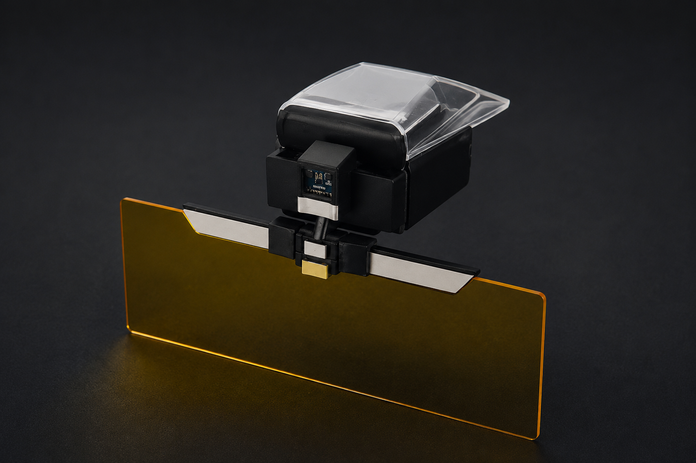
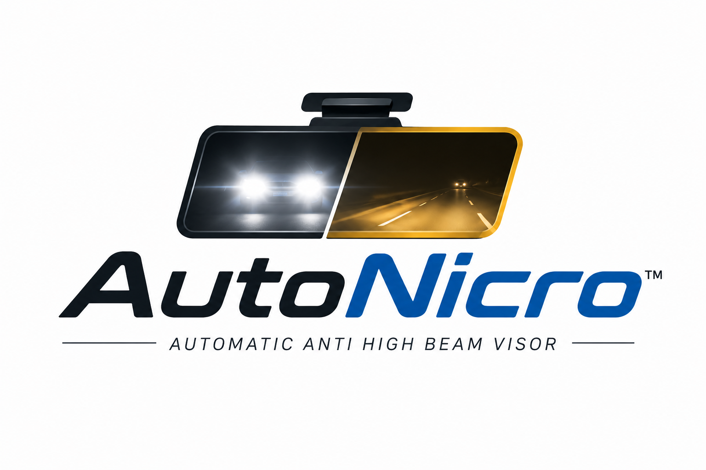

SMART NIGHT DRIVING
Automatic Anti-High-Beam Visor designed to reduce glare, improve nighttime visibility, and protect drivers from dangerous high-beam exposure.

Instant glare response system
Fits different vehicle types
Cost-effective safety solution
Simple and practical design
Detects incoming bright headlights instantly using a light sensor.
Automatically lowers the visor without manual adjustment.
Reduces glare while maintaining clearer road visibility.
Lightweight and compatible with different vehicle types.

AutoNicro is developed by SynFive Technologies to address nighttime driving hazards caused by high-beam glare. Through automated glare reduction technology, the product improves driver safety, comfort, and visibility without requiring manual visor adjustments.
Email: synfive.tech@gmail.com
Location: Batangas City, Philippines